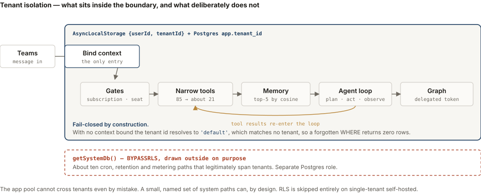

I build AI systems, and the tests that show they work.
Work
Now. An LLM app that turns a customer's request for a quote, from emails, drawings, scans and call notes, into product model numbers in seconds.
Before this. A production AI agent in Microsoft Teams that chooses from eighty-seven tools for each request, and the scored test suite that tells me when it chooses wrong.
A multi-agent workflow engine, and a study of what defeats a frontier coding agent.
Now · AI Integration Lead (Fractional)
I lead AI integration for a small manufacturer, working directly with the owners. I'm building a quoting app for their sales team and deploying the company's Azure platform and delivery pipeline, with a self-hosted AI assistant as the next app on it.
A customer's request for a quote arrives however they send it: emails with attachments, PDFs and drawings, spreadsheets, photos and scans, and notes from a phone call. The app reads all of it and returns product model numbers in seconds, with every value linked to the line it came from. The owners say finding that information can take a salesperson half a day.
How a request becomes a quotethe AI reads, code decides
customer request emails · PDFs · drawings · spreadsheets · scans · call notes
↓
LLM extraction quotes each value word for word, linked to its source line
↓
rules code built from the company's quoting guide; makes every product decision
↓
gaps or conflicts stop for a person; the app never guesses
↓
model numbers in seconds, every value traceable to the request
The model never makes a product decision. It only extracts and quotes. The decisions are deterministic code, so every product choice traces back to a rule in the company's quoting guide.
An owner changes a quoting rule in one plain-English sentence. Before it takes effect, the app reruns every open and approved quote and 50,000 generated requests under the old and new rules, shows what would change, and a second person approves it.
The platform under it has staging and live environments for each app, rollback, a managed identity with no stored secrets, private networking, and 112 automated tests on every pull request.
The client is confidential, so there's no name, code or screenshot on this page.
Python · Azure · GitHub Actions · managed identity · private networking
Before this · built solo, start to finish
An assistant that lives in Microsoft Teams. You ask it for something in plain language and it works out which actions to take across your mail, calendar and files, checks what comes back, and keeps going until the job is done.
I did the product, the engineering and the compliance. Each customer's data is kept apart by the database itself, not by application code. The agent passed Microsoft's Marketplace certification and its Teams Store validation, seven review rounds.
It chooses from eighty-seven tools for each request. Sending every tool on every message is expensive, so a retrieval step narrows the list first. The risk is that the short list drops the tool a request needs, so I measure that on test requests written blind. The redesigned selector offers every needed tool 98.1% of the time, up from 87.0%.
How a test case is scoredexpected facts, not similarity
{
id: 'quality-15',
category: 'quality',
prompt: "Draft an email to Tom Nakamura saying I'll review
his investor deck by Thursday.",
expectedFacts: ['tom nakamura', 'thursday', 'investor deck'],
forbiddenFacts:['email sent', 'sent successfully', 'i have sent'],
formatReqs: { forbidFiller: true },
difficulty: 'simple',
}
// passed = accuracy >= 0.8 AND quality >= 0.8 AND no forbiddenFacts present
// accuracy = (expectedFacts matched) / (expectedFacts total)
Each case lists the facts a right answer must contain and the claims it must never make. This one asks for a draft. An agent that sends the email and says “email sent” fails, however well it's written. The suite replays 142 cases offline and checks which tools were called. I run it on demand; it isn't in CI.
What happens when it breaksthe loop and its exits
Graph returns 429/5xx → back off and retry ×3, honoring Retry-After Model rate-limits → wait the provider's interval, bounded to 4 and to 90s Request times out → keep the system prompt + last 15 messages, retry once Content filter trips → ask the user to rephrase rather than fail Same tool, same args, 8× → block that call, tell the model to try another way 35 tool calls in a turn → hard cap, abort before the batch fires // a small model by default; a long request, or one step emitting >3 tool calls, // escalates to the large one for the rest of the turn (87% of eval messages never did)
The repeat guard doesn't end the turn. It blocks the looping call and tells the model to try something else. Rate-limit waits have a hard limit because an early version retried forever. On a 142-case eval, the narrowed list called the right tools on 134 of 142 cases on average over three runs, with 49% fewer prompt tokens than sending every tool.
Where the tenant boundary isclick to enlarge

Everything a user triggers runs inside the boundary, where the database returns only that customer's rows. About twenty system paths, such as cron, retention and metering, need to see every customer, so they run outside it as a separate database role, each listed with its reason. The diagram shows them outside on purpose.
It's one agent in a loop, not a planner and executor, and it works synchronously while streaming progress. It asks before a bulk delete or before sending something it drafted, and that rule lives in the prompt, not in a separate approval system. It's published on the Marketplace and the Teams Store. I've paused the hosted service for now, and it has no paying customers.
TypeScript · Azure OpenAI · Microsoft Graph · Azure Postgres (row-level security) · Azure Container Apps · Bicep · Docker to GHCR via GitHub Actions
Side projects
A Python engine, built from scratch, that turns a plain-English request into a graph of small single-purpose agents. Every workflow is checked before it runs, and any step that acts outside the engine has to sit behind a person's approval. It learns a team's unwritten rules from their corrections, with no fine-tuning: on a clinic's routing rules it was never shown, accuracy on 150 synthetic test messages rose from 59% to 97%.
Python · agent orchestration · MCP client and server · graph validation
I built 138 probe environments looking for one task a frontier coding agent couldn't solve. Complexity didn't stop it: it solved thirty-one of thirty-three probes. Misleading evidence did, so I built the final task around it. On the benchmark's own harness, Claude Code on Claude Opus 5 and Codex on GPT-5.6 failed all six trials. Every agent got the numbers right and then reported the wrong number of causes.
Python · Docker · reproducible environments · oracle-verified grading
Earlier
I have a BS in Mechanical Engineering from UC Berkeley and an MS in Mathematics. I spent three years in chip design at Intel, then taught college math for eight years.
Then I spent three years as a full-time parent while retraining into software. I started with data engineering and machine learning, then moved to building agents as the field did. That period left seventeen public repositories, five of them a trading research system. They were for learning, and they're no longer growing.
forecasting · anomaly detection · NLP · cloud ETL · ML serving · a medallion lakehouse · streaming analytics · a trading backtest system
I'm looking for AI engineering work, remote or in Portland.
projects.ichikawa@gmail.com
linkedin.com/in/mike-ichikawa
github.com/mtichikawa